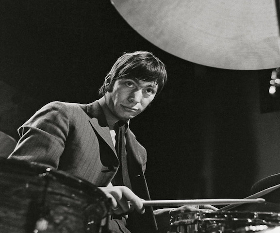
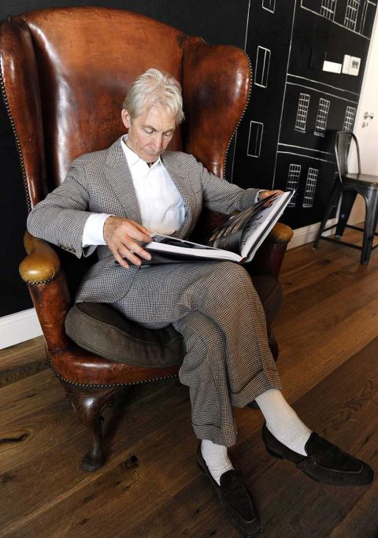
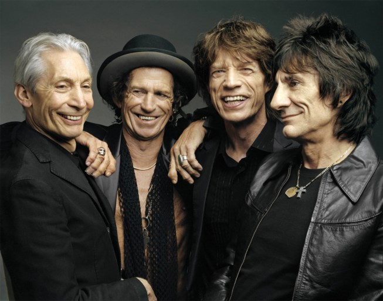
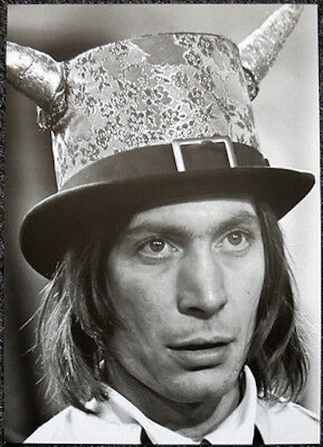
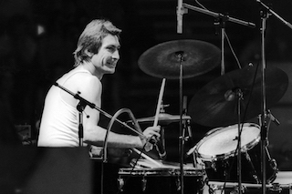
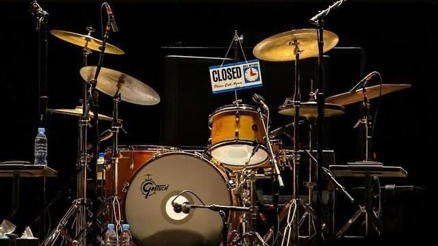
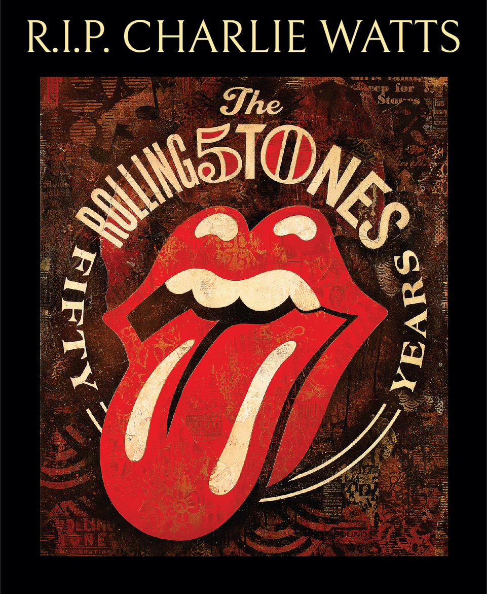

Charlie Watts Tribute
Learn more about Charlie Watts







One the Greatest Drummers in Rock-n-Roll, Period.
- "I wanted to play drums because I fell in love with the glitter and the lights, but it wasn't about adulation. It was being up there playing."
- "People say I play real loud. I don't, actually. I'm recorded loud and a lot of that is because we have good engineers. Mick knows what a good drum sound is as well, so that's part of the illusion really. I can't play loud."
- "I hate leaving home. I love what I do, but I'd love to go home every night."
- "Rock and roll has probably given more than it's taken."
- "The world of this is a load of crap. You get all these bloody people, so incredibly sycophantic."
- "It's been years and years and years I've been playing the drums, and they're still a challenge. I still enjoy using drumsticks and a snare drum."
- "I'm very strict with my packing and have everything in its right place. I never change a rule. I hardly use anything in the hotel room. I wheel my own wardrobe in and that's it."
- "For some reason at 12 or 13, I just heard Gerry Milligan and fell in love with that, whatever it was called."
- "I never had lessons. Used to try to play to records, which I hated doing. Still can't play to them."
- "You need better technique than I have to play jazz, but what you have to do is the same thing, isn't it?"
- "You'd imagine Mick would be the happiest person in the world, and yet a lot of the times he isn't."
- "A lot of our tracks have sounded a lot better than I thought they would because of recording, mixing, and because I probably didn't hear it that way. I'm not a songwriter."
- "I don't like drum solos, to be honest with you, but if anybody ever told me he didn't like Buddy Rich I'd right away say go and see him, at least the once."
- "I saw Al Foster with Miles Davis the other week. It was beautiful. But, the whole thing was, Al Foster played as well as everybody else, but all of them were quite brilliant under Miles Davis' direction."
- "It doesn't really change, actually. I think The Rolling Stones have gotten a lot better. An awful lot better, I think. A lot of people don't, but I think they have, and to me that's gratifying. It's worth it."
- "Mick's not good on his own problems, but he's very good at other people's. He's been wonderful over the years. I don't mean I ring him up every week, but he's fantastic."
- "Usually I can hear the pianos, the saxophone, and usually I can hear Ronnie. But I really need to listen to Keith and Mick. The rest of the band is sort of an embellishment to that."
- "We always work at least a month to six weeks before we go on the road, usually for something like eight to 12 hours a night. It took six weeks to do it this time. We just play virtually everything we know."